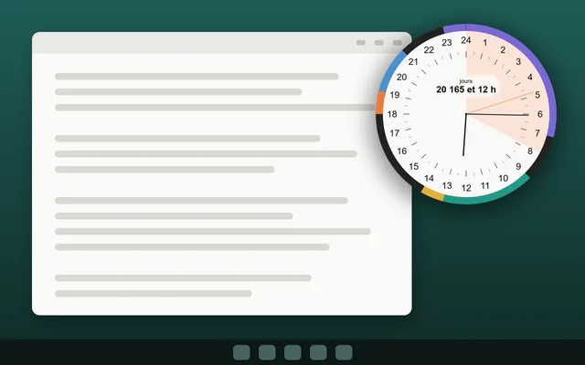

Windows
Une horloge 24 heures sur votre bureau Windows
Visdap garde toute votre journée sur un cadran rond de 24 heures dans un coin de l'écran : vous voyez ce qu'il reste d'un bloc de travail sans changer de fenêtre.
- Sans compte
- Sans publicité ni pistage
- Fonctionne hors ligne

Ce que vous obtenez sous Windows
Toujours visible
Le cadran peut rester au-dessus des autres fenêtres. En mode fantôme, les clics le traversent jusqu'à la fenêtre en dessous.
Votre taille et votre transparence
Toute taille de 150 à 900 pixels, avec une transparence réglable.
Saisie rapide
Appuyez sur Ctrl+Maj+Espace pour ajouter une tâche depuis n'importe quelle appli.
Rappels, Pomodoro et projets
Rappels sonores, minuteur Pomodoro et projets avec bandes d'échéance. Pomodoro et projets sont inclus dans Pro.
Questions et réponses
Quelles versions de Windows sont prises en charge ?
Windows 10 (version 1809 ou ultérieure) et Windows 11.
Peut-il démarrer avec Windows ?
Oui. Vous pouvez activer le démarrage avec Windows dans les réglages.
A-t-il besoin d'internet ?
Non. Seuls l'achat ou la restauration de Pro nécessitent une connexion au Microsoft Store.
Planifiez aujourd'hui. Voyez tout.
Installez Visdap et planifiez votre première journée en quelques minutes. Gratuit pour commencer.